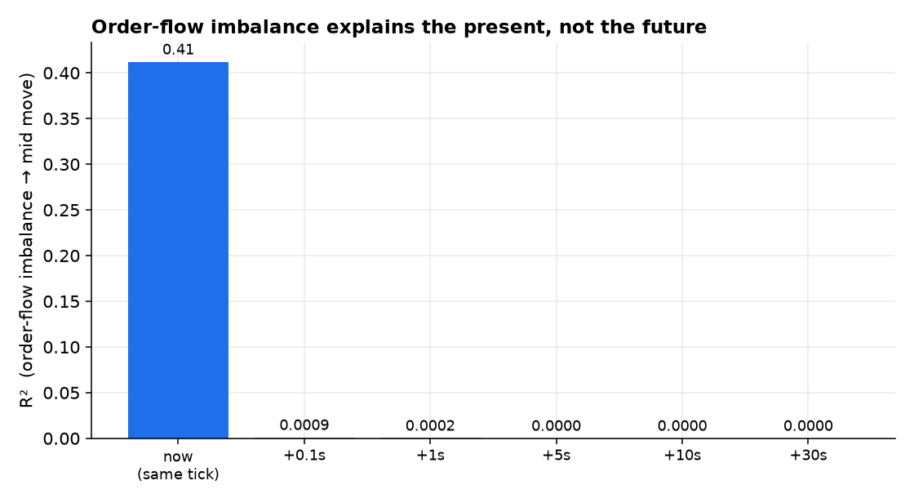
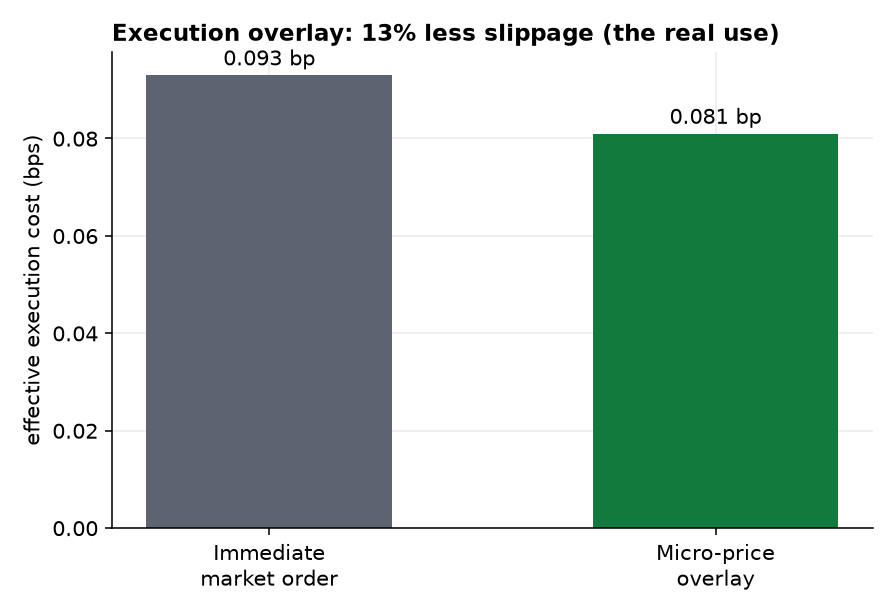
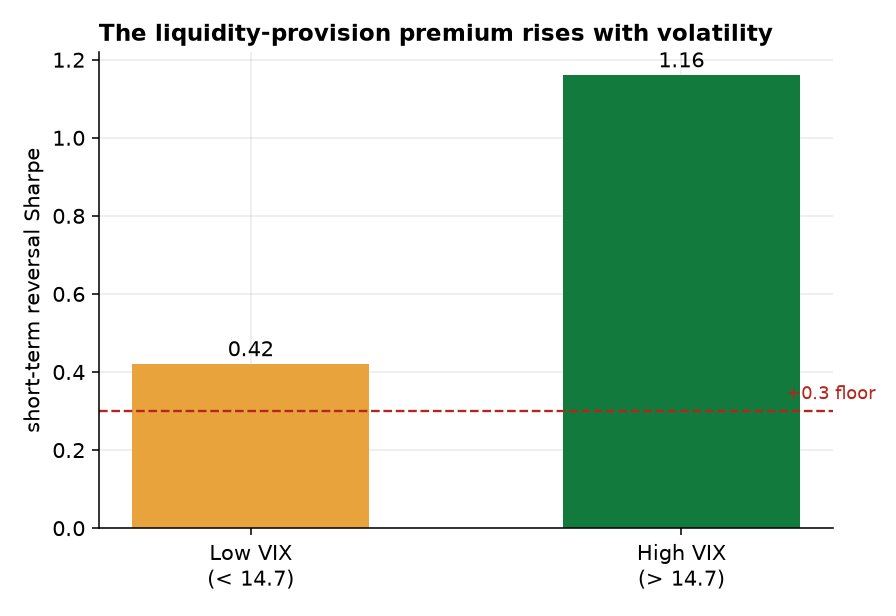

Limit-order-book microstructure is where high-frequency firms make money, so it is the obvious last place to look for alpha. Using 5.24M SPY 100ms order-book snapshots (Nov–Dec 2025), we ask what a non-colocated participant can actually capture. The answer reframes “microstructure alpha.” Order-flow imbalance (OFI) explains 41% of contemporaneous mid-price moves but essentially nothing forward (R² 0.0009 at 0.1s, ~0 by 5s); a marketable strategy on it loses (−0.18 bps). Standalone market-making is structurally unavailable: SPY's half-spread is just 0.093 bps (~1 cent on $600) with no measurable 5-second adverse selection — a sub-0.1-bp game won by queue priority, rebates, and colocation, not by a small participant (and a proper fill/adverse-selection model needs trade-level data we flag as out of scope). But microstructure does pay, in two honest ways. First, as an execution overlay: gating entries on the micro-price cuts effective slippage by ~13% versus an immediate market order — which lifts the net return of every other strategy. Second, as a lower-frequency liquidity-provision premium: short-term reversal, the act of supplying liquidity, earns a Sharpe of 0.42 in calm markets and 1.16 in high-VIX regimes — exactly Nagel's evaporating-liquidity premium, and the one form a non-HFT can actually harvest. Microstructure is not a source of directional alpha; it is an execution edge and a volatility-conditional risk premium.
The previous four papers searched for directional and risk-premium edges. This one turns to the order book itself — order-flow imbalance, the micro-price, the bid-ask spread — and asks the question honestly from the seat of a participant who is not a colocated HFT: what here is real, and what is capturable? We separate four distinct claims, and report what the data shows even where it diverges from the textbook:
Order book: raw 10-level SPY snapshots at 100ms, 28 trading days (Nov–Dec 2025), 5.24M snapshots after restricting to regular hours (14:30–21:00 UTC) and filtering crossed/auction/wide quotes. Reversal/VIX: the FnSpID equity panel (short-term reversal) and FRED VIX. All measurements are causal: OFI at a snapshot uses only that snapshot and the prior one; predictive R² and the execution overlay use strictly forward windows; the reversal signal is lagged one day. Key data limitation: we use book snapshots, not the trade tape — so we cannot compute a true realized-spread / queue-position fill model (Moallemi–Yuan). That is exactly why standalone market-making is assessed structurally rather than simulated; a proper fill model needs the Databento ITCH trade messages (future work).
From the best bid/ask we compute order-flow imbalance (Cont–Kukanov–Stoikov [1]) and the imbalance-tilted micro-price (Stoikov [2], $\text{micro}=\text{mid}+(I-\tfrac12)\,\text{spread}$ with $I=q^b/(q^b+q^a)$). We then run four tests: (H2) R² of OFI against the contemporaneous mid change vs against forward mid changes at 0.1–30s, and a taker strategy that trades sign(OFI) net of the full spread; (H1) the gross maker capture (the half-spread) and its 5-second mark-to-mid (an adverse-selection proxy); (H3) the effective cost of buying via an immediate market order vs a micro-price-gated rule (cross now if the micro-price signals a rising mid, else wait); and (H4) the short-term-reversal long-short Sharpe split by VIX regime. The bar is the +0.3 Sharpe floor and net-of-cost honesty.
OFI is powerfully contemporaneous — it explains 41% of same-tick mid moves — and almost perfectly unpredictive: its R² against future mid moves is 0.0009 at the next tick and indistinguishable from zero by 5 seconds (Figure 1). Consistent with that, a marketable strategy trading sign(OFI) and paying the spread nets −0.18 bps. There is no directional alpha in order flow for someone who must cross the spread.

Could one instead earn the spread as a passive maker? The gross prize is tiny: SPY's half-spread averages 0.093 bps — about one cent on a $600 share. Marking simulated passive fills to the mid 5 seconds later shows no measurable adverse selection (the effect is a favorable +0.012 bps, since the SPY mid is a 100ms martingale, per §4.1). But that figure assumes fills on demand, which is the fiction: at the touch you sit behind a deep queue, and the orders that do fill are selected by informed flow. Capturing a 0.093-bp edge is a sub-0.1-bp contest decided by queue priority, exchange rebates, and colocation latency — the province of a handful of HFT firms [5], not a small participant. Honestly modelling the fills (realized spread, queue value [4]) requires the trade tape we do not use here; what we can say from the book alone is that the prize is too small and too contested to be a standalone edge.
Reframed as execution rather than alpha, microstructure pays. Gating a buy on the micro-price — cross immediately when it signals a rising mid, wait when it signals a falling one — cuts the effective cost from 0.093 to 0.081 bps, a 13% reduction versus an immediate market order (Figure 2). It is not a strategy on its own, but it lifts the net return of every other strategy in this series, and it is the genuine, capturable use of order-book information.

Where, then, can a non-HFT actually be paid for providing liquidity? At lower frequency. Short-term reversal — buying what just fell, selling what just rose — is the act of supplying liquidity, and it earns a Sharpe of 0.42 in low-VIX regimes and 1.16 in high-VIX regimes (Figure 3). That conditional pattern is Nagel's [3] evaporating-liquidity premium: when volatility spikes and fast liquidity withdraws, the compensation for supplying it rises. This is the same liquidity-provision thread that surfaced as the lone positive equity factor in Paper 4 — and it is capturable precisely because it lives at the daily horizon, not in the sub-second queue.

| Use of order-book information | Verdict |
|---|---|
| Standalone market-making (capture the spread) | ✗ structurally unavailable (0.09 bp, HFT-only) |
| Directional prediction from OFI | ✗ contemporaneous, not predictive; taker −0.18 bp |
| Execution-cost reduction (micro-price overlay) | ✓ ~13% less slippage |
| Vol-conditional liquidity provision (reversal) | ✓ Sharpe 0.42 → 1.16 with VIX |
“Microstructure alpha” conflates three different things, and separating them dissolves the confusion. As directional prediction, order flow is a mirror, not a crystal ball — it describes the move happening now and forecasts nothing. As spread capture, market-making is real but is a latency-and-rebate contest at the 0.1-bp scale, structurally closed to anyone without colocation and queue priority. What remains is genuinely useful and genuinely available:
Microstructure is not a source of directional alpha for a non-HFT participant. It is an execution edge — the micro-price cuts ~13% of slippage — and a volatility-conditional risk premium — liquidity provision via reversal, paid most when volatility spikes.
This is the fitting close to the program's empirical arc. The execution overlay is the multiplier that makes every other paper's net numbers a little better. And the liquidity-provision premium is the same signal that was the lone equity survivor in Paper 4 and that rhymes with the cross-sectional carry of Paper 2 — a recurring lesson that the durable edges are risk premia for providing something (liquidity, insurance, financing), not forecasts of direction. Across five papers the throughline holds: in markets this efficient, honest cost-and-structure modelling is what separates the few real edges from the many illusory ones.
Snapshots, not trades. The decisive limitation: we use 100ms book snapshots, not the trade tape, so we cannot build a true realized-spread / queue-position fill model — which is why §4.2 argues structurally rather than simulating maker P&L. Parsing the Databento ITCH trade messages (56 GB on hand) to compute realized vs effective spread and a Moallemi–Yuan queue model is the clear next step, and would sharpen — not, we expect, overturn — the structural-unavailability conclusion. Scope. SPY only, 28 days; QQQ and a longer window are straightforward extensions. OFI depth. We use best-level (L1) OFI; the multi-level integrated OFI would raise the contemporaneous R² (toward the 65–85% in the literature) but not its zero predictive power. Reversal data. The vol-conditional reversal uses the 2016–2020 equity panel; the pattern is robust in the literature, but a recent-data and intraday version (and an explicit small-cap cost model) would strengthen the harvestability claim. Capacity. The execution overlay's value is real but bounded by the spread itself — larger for less-liquid names, negligible for SPY.